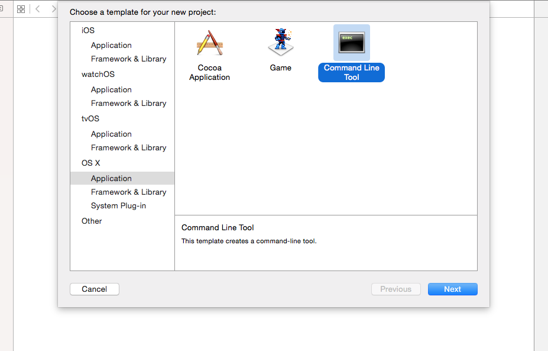
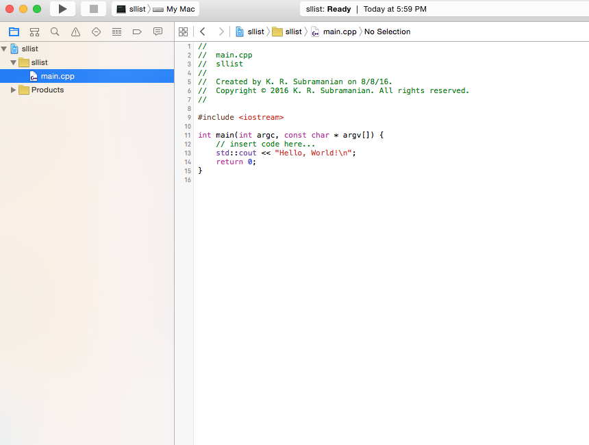
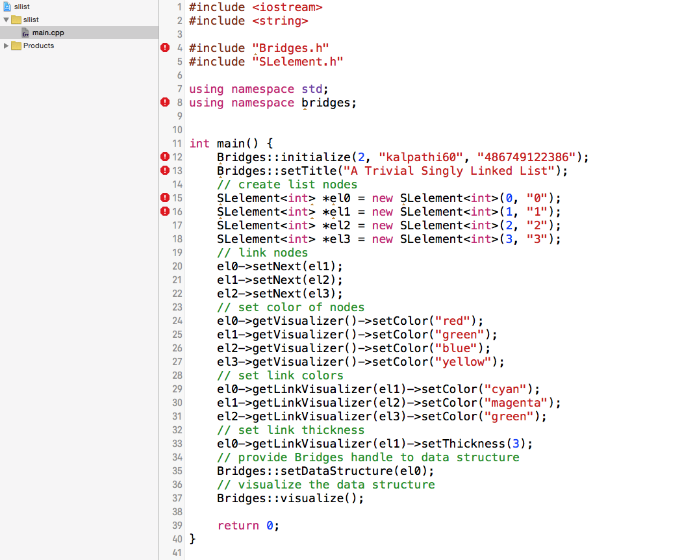
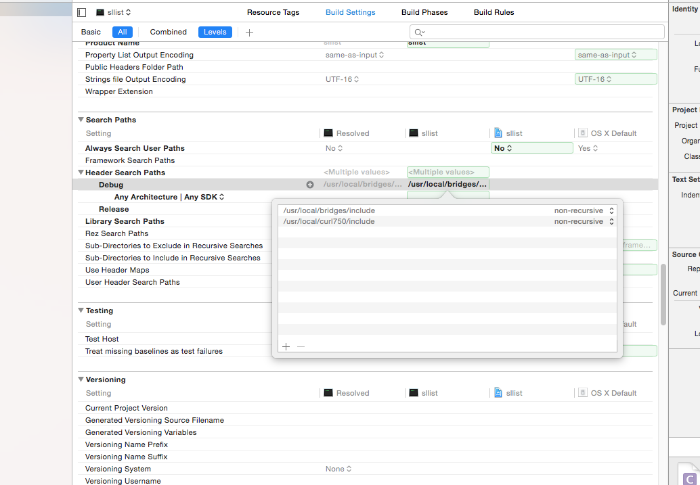
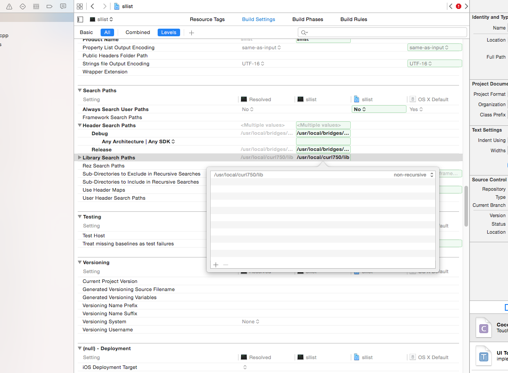
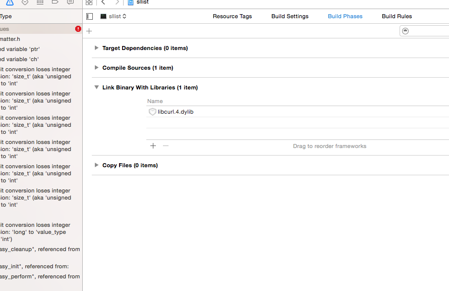
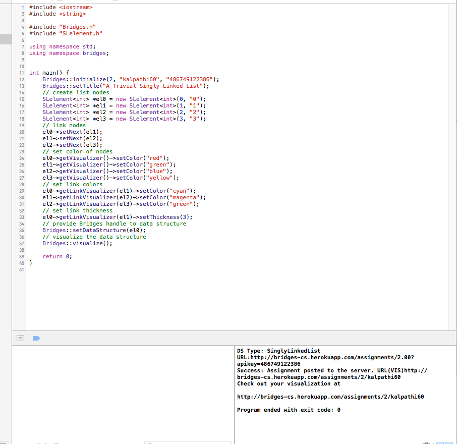
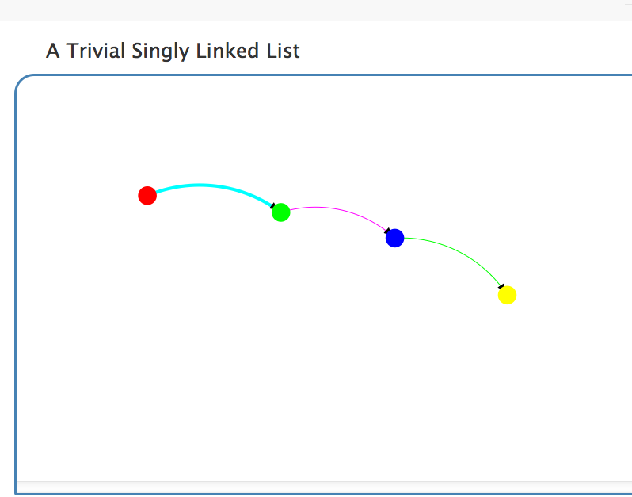

Step 1: Install Xcode
- If you do not have Xcode installed on your Mac
installed, download it from the
Apple developer site.
and install it on your computer.
- You must also install the Xcode command line
tools; this can be done from the command line from
Terminal window as follows:
xcode-select --install
- If this completes successfully, you are now ready
to use Xcode with BRIDGES.
- Open Xcode and you should see it on your dock(set
Options to keep it on the dock permanently).
|
|
Step 2: Create Bridges Account
Visit the Bridges
main page
and create yourself an account by clicking
the login button
on the top navigation bar. Please ensure that
your user id is devoid of spaces, as it will be
used as part of the web link for your projects.
After creating your account, click
on your profile name in the upper right corner to
view your profile. Once in your profile, you will see your
API Key; you will need this API key later
in the tutorial(as well as in every BRIDGES program
you write). NOTE: Make sure to remember
your password. There is no password recovery option(for now),
and you can only have one account per email address.
|
Step 3: Download the Bridges C++ template files, Install
CURL library
- Download the Bridges C++ class files from this
link. Save this
in a convenient folder. You will need this later.
- BRIDGES uses the CURL
library for communicating with the web
server, and posting assignments. Download CURL from this
link and
install the library in a convenient location
|
Step 4: Create a C++ Project
- Open Xcode
- File-->New-->Project
- Click on OSX-->Application-->,
and selecting Command Line Tool
- Specify a name for the project and a location
on your drive.
- You should now see a project on the left panel
with a predefined main.cpp skeleton. Click
on main.cpp to bring up the source file.
|


|
Step 5: Type or paste in a Bridges example program
- There are multiple ways to import a source
file. Here we will simply copy/paste a
BRIDGES program to illustrate a singly
linked list example.
- Notice the number of errors that show up;
we will resolve them next.
|

|
Step 6: Project Settings
- Click on the Project. This will bring up the
Project Settings (middle panel). Select
Build Settings (top panel)
- You will next need to specify the library and
include search paths
- Include Paths: You will need to specify
the path to the CURL library include as well as
the BRIDGES class include files(not all BRIDGES
sources are in include files)
- Scroll down to the section titled
Search Paths
- Double click on the middle of line that
says "Header Search Paths" and this will bring up an edit box(see figure on the right).
- Click on the "+" character on the bottom to add a path. You will do this twice to add
the two include paths, as shown. These paths
refer to the locations of the include files
of CURL library and the BRIDGES include files,
respectively.
- Click anywhere else to get rid of the
editor box.
- Library Paths: You will need to specify
the path to the CURL library(this is usually under
the lib folder of your CURL installation).
- Look for the "Library Search Paths" right
under "Header Search Paths"
- Similar to the previous step, double click to
bring up the Editor box and enter Library Search
path.
- Click anywhere else to get rid of the
editor box.
- Link the CURL Library
- Scroll to top of Settings and click on
Build Phases Select "Link Binary with
Libraries".
- Click the + button and select
Add Other. Navigate to your Curl
library installation and add the library
(liburl.dylib) to the project.



|
|
Step 7: Build and Run Project
- To build and run your project, hit the 'Run'
button(rightward pointing filled triangle on
the upper left window).
- If everything compiles correctly, you will see
a console window at the bottom with a web link
pointing to the visualization. Else if the build
failed, then click on the little triangle
with the exclamation point(below the
Build/Run button) to see the build errors.
|

|
Step 8: Visualize
- Paste the link into your browser to see the doubly linked
list.
- If you see the visualization, you are done with your
first BRIDGES program. Congratulations!
- You should be able to move the visualization with your
left button, click and pull the nodes, see the labels on
mouse over, etc.
|

|